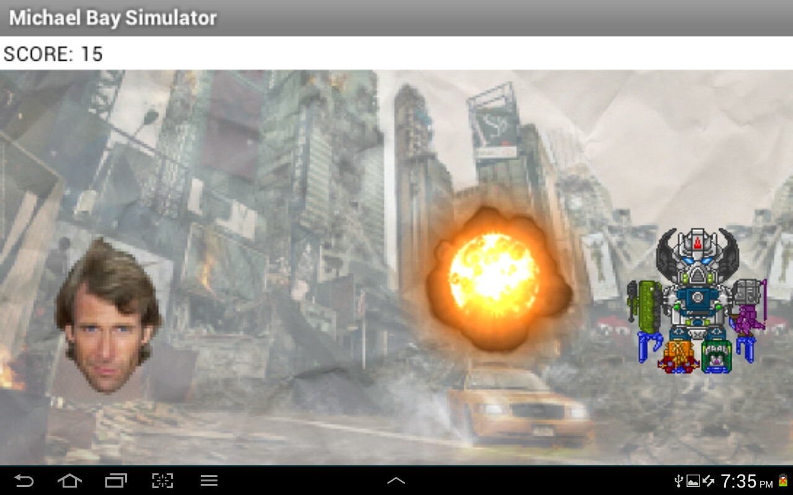

This game is a whack-a-mole style game that features everyone's favorite transformer-destroying, building-crushing, explosion enthusiast of an American movie producer: Michael Bay!
The game is played by tapping a transformer to blow them up. Normal transformers are 1 point, the big one is 2.
If you tap Michael Bay, however, it is a game over.
Definitely the hardest part of this was the explosion. It is about 2 seconds long at around 24 frames per second, making it around 48 seperate pictures. I had to cut each one out of a sprite sheet and upload them seperately. Then I had to set up a clock that showed each image consecutively at a certain interval. This took around 2-4 hours.
Something I would improve (if given enough time) is the difficulty level. I would have added in lives that would go down whenever you let a transformer by. I would also have inputted the lens flare that would shine occasionally, giving double points. Then I would have added ninja turtles for power-ups.